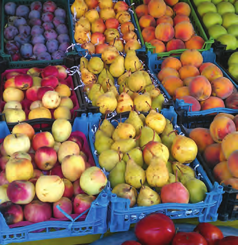
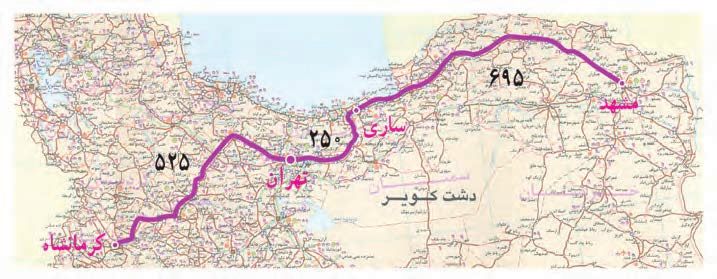

۳ــ کتابی که مینا از کتابخانه گرفتهاست، ۱۱۶۰ صفحه دارد. او هفتهی اوّل ۲۳۵ صفحه، هفتهی دوم ۴۷۱ صفحهو هفتهی سوم ۱۵۰ صفحه از آن را خواندهاست.
مینا چند صفحه از این کتاب را هنوز نخواندهاست؟
جواب=
۴ــ حمیده خانم به میوهفروشی رفت. او از سه میوهی سیب، گلابی، و هلو هر کدام یک کیلوگرم خرید. با توجّه به قیمت میوهها حمیده خانم چقدر پول دادهاست؟
جواب=

۵ــ در نقشهی زیر فاصله شهرها به کیلومتر نوشته شدهاست. مسافری میخواهد از شهر کرمانشاه و از مسیر تهران و ساری برای زیارت به مشهد مقّدس برود. او چند کیلومتر راه را باید طی کند؟

جواب=
۶ــ پادگانی مستطیل شکل به طول ۵۵۰ متر و عرض ۱۵۰ متر داریم. میخواهیم دور این پادگان را سیم خاردار بکشیم. برای این کار به چند متر سیم خاردار نیاز داریم؟